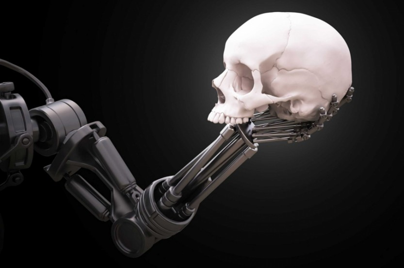

Introduction
L'intelligence artificielle rend la vie plus facile et plus confortable, ou du moins elle devrait l'être dans de nombreux cas. Cependant, il y a des inconvénients à cela , l'IA comporte de nombreux dangers. Bien sûr, nous n'avons pas (encore mdr)à craindre les machines qui nous réduisent en esclavage ou tentent de tous nous tuer, mais dans certains domaines, les risques posés par l'intelligence artificielle sont bien réels.Le développement de l'intelligence artificielle génère de l'enthousiasme, mais aussi de vives inquiétudes, dont d'un certain nombre d'auteurs de science-fiction et qui décrivent le risque d'une perte de contrôle des humains sur le processus technique en plus de cela, différents intellectuels ont également pris position tels que Stephen Hawking, Bill Gates ou encore Elon Musk.
Singularité Technologique
La singularité technologique est une hypothèse selon laquelle l'invention de l'intelligence artificielle déclencherait un emballement
de la croissance technologique qui induirait des changements imprévisibles sur la société humaine.
Au-delà de ce point, le progrès ne serait plus l’œuvre que d’intelligences artificielles, qui s’auto-amélioreraient mais de nouvelles générations de plus
en plus intelligentes apparaissant de plus en plus rapidement, créant une « explosion d'intelligence » créant finalement une puissante superintelligence qui dépasserait
qualitativement de loin l'intelligence humaine.
Le risque serait que l'humanité perde le contrôle de son destin. Certaines personnes sont même convaincus que la singularité signifierait la fin de l'ère humaine,
la nouvelle superintelligence continuant de s'améliorer et d'évoluer technologiquement à une vitesse incompréhensible pour les humains.
La possibilité et la date de survenue de cet évènement hypothétique fait toutefois l'objet de débats entre scientifiques. Plusieurs futurologues et transhumanistes
l’attendent pour la troisième décennie du XXIe siècle.
La perte de controle
Le développement d'une nouvelle technologie signifie toujours que les chercheurs, les ingénieurs, les financiers et les autres chefs de file ont
le contrôle sur l'orientation à suivre, tout du moins jusqu'à maintenant.
La situation de l'intelligence artificielle est quelque peu différente parce qu'elle peut ( dans un certain cadre )
se développer davantage sans que l'homme n'en détermine son orientation.
Le chômage
Ne nous leurrons pas, l'intelligence artificielle coûtera des emplois à beaucoup de gens. Il y a des domaines dans lesquels les méthodes d'IA fonctionnent beaucoup mieux que tout ce que les humains peuvent apporter. De nombreuses transactions boursières et bancaires, par exemple, s'exécutent déjà de manière entièrement automatique, sans intervention humaine.De plus, la plupart des nouveaux emplois créés par l'IA ont des exigences complètement différentes et souvent plus élevées que celles qui ont été éliminées.
La Repression dans la société
L'intelligence artificielle peut reconnaître les gens en quelques secondes, même dans une grande foule. De plus, il y a des entreprises qui peuvent
identifier leurs employés par la façon dont ils déplacent le pointeur de la souris sur un ordinateur, en quelques secondes. Des enregistrements sonores peuvent également être
utilisés pour la surveillance, de même que des traces de l'utilisation d'Internet.
Toutes ces données peuvent être recherchées, filtrées et analysées plusieurs fois plus rapidement et plus efficacement que jamais auparavant en utilisant l'apprentissage
machine et d'autres méthodes d'IA. Les gouvernements, les despotes et les régimes autoritaires disposent ainsi d'outils beaucoup plus puissants pour contrôler et surveiller
leur propre population et la priver dans une certaine mesure de sa liberté.

Les craintes
Pourquoi l’intelligence artificielle fait-elle si peur aux Français ?
Selon une étude, de nombreux aspects de l'intelligence artificielle inquiètent les Français. Les humains courent-ils un tel danger à laisser les machines contrôler leur vie?
Si les Français admettent volontiers que certains secteurs, comme l’automobile (37%), la finance (26%) ou la santé (24%), vont gagner en efficacité grâce aux nouvelles technologies, ils ne sont
pas enclins à livrer leurs données personnelles pour améliorer les algorithmes des intelligences artificielles. Ils sont majoritairement défavorables aux partages d'informations plus sensibles comme
les données financières (70%), l’historique de leur téléphone (68%), les antécédents familiaux (66%), l’historique des recherches sur Internet (66%) ou les données médicales (63%). Ils sont même
très partagés sur les données de géocalisation avec 54% de personnes qui n’y sont pas favorables.
D'après certains spécialistes, ces technologies génèrent de la suspicion et des craintes avant d’entrer dans notre quotidien car le paradoxe humain et d'avoir peur en ce que nous ne connaissons pas et c'est ce même paradoxe qui explique cette mefiance de la part de la population envers l'intelligence artificielle car selon certaines sources, un quart de la population ne sait pas ce qu'est l'intelligence artificielle.
Par exemple alors que les véhicules de dernière génération qui gèrent déjà le freinage, les distances entre les véhicules et les sorties de route et guident le conducteur vers sa destination, les gens ne font
pas confiance dans une voiture totalement autonome: 59% n’ont pas confiance dans les décisions qu’elles pourraient prendre, 46% craignent d’en perdre le contrôle et 45% ont peur qu’elles provoquent un accident.
La peur des hackers ne vient qu’en dernier.
Globalement, 56% ne sont pas prêts à utiliser une voiture autonome.
Ainsi,certains industriels prennent ces risques au sérieux, c'est dans ce sens que la firme Google développe un « bouton rouge » intégré en bas niveau dans
les IA permettant de désactiver les intelligences artificielles, sans possibilité de contournement par celle ci et au-delà de simplement « tuer » l'IA, l'objectif de ce « bouton rouge »
est aussi de la geler dans son process, en évitant de l'arrêter, et éviter ainsi une remise à zéro des apprentissages ou des calculs en cours.
Ce risque est également pris au sérieux sur le plan juridique. Ainsi, le parlement européen a demandé à une commission d'étudier la possibilité qu'un robot doté d'une intelligence
artificielle puisse être considéré comme une personne juridique. Advenant un dommage causé à un tiers par une intelligence artificielle, celle-ci pourrait être condamnée à réparer ce
dommage. Il serait envisageable de conférer une personnalité électronique à tout robot prenant des décisions autonomes ou interagissant de manière indépendante avec des tiers. Au même
titre qu'une personne morale et physique.
L'ia a également de quoi effrayer car de grands noms comme Bill Gates, Stephen Hawking qui décrit l’intelligence artificielle comme soit la meilleure soit la pire chose
jamais arrivée à l’humanité ou encore Elon Musk ont déjà mis en garde contre les éventuels dangers de l’évolution des IA à l’avenir.